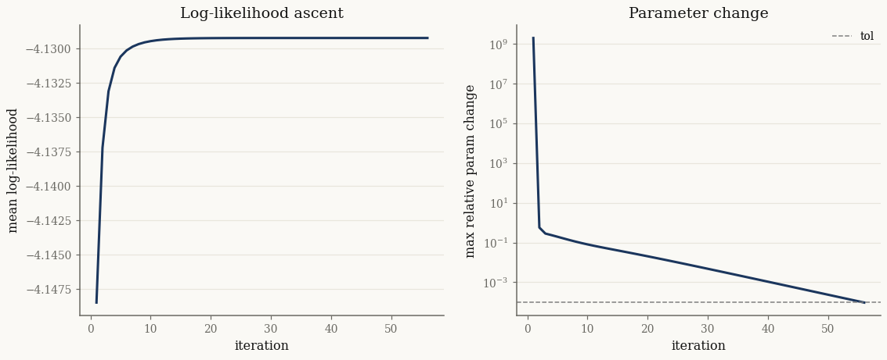

Batch EM in practice#
Fitting a normal variance-mean mixture is a missing-data problem: the subordinator \(Y\) is latent. The EM algorithm alternates
E-step — given the current model, compute the conditional expectations \(\mathbb{E}[t(Y) \mid X]\) of the sufficient statistics, and
M-step — set the new expectation parameters \(\eta\) to those conditional means and convert \(\eta \mapsto \theta\) via
from_expectation.
BatchEMFitter runs this loop over the full dataset each iteration. This
tutorial covers its diagnostics, regularizations, and backend options.
import jax
jax.config.update("jax_enable_x64", True)
import jax.numpy as jnp
import numpy as np
from normix import NormalInverseGaussian
from normix.fitting.em import BatchEMFitter
from normix.utils.plotting import set_theme
set_theme()
np.set_printoptions(precision=4, suppress=True)
Data and a fitter#
We simulate from a known 3-D NIG model and fit it back. BatchEMFitter.fit
returns an EMResult:
true = NormalInverseGaussian.from_classical(
mu=jnp.array([0.0, 0.0, 0.0]),
gamma=jnp.array([0.4, -0.3, 0.1]),
sigma=jnp.array([[1.0, 0.3, 0.1], [0.3, 1.0, 0.2], [0.1, 0.2, 1.0]]),
mu_ig=1.0, lam=1.5)
X = true.rvs(5000, seed=0)
init = NormalInverseGaussian.default_init(X)
fitter = BatchEMFitter(
max_iter=150, tol=1e-4, verbose=1,
e_step_backend="cpu", m_step_backend="cpu", m_step_method="newton")
result = fitter.fit(init, X)
print("converged :", result.converged)
print("iterations:", result.n_iter)
print("elapsed : %.2fs" % result.elapsed_time)
============================================================
EM Fitting: NormalInverseGaussian
============================================================
Algorithm : EM
Loop : Python loop
E-step : cpu
M-step : cpu / newton
Regularize : none
Tolerance : 1.0e-04
Max iters : 150
Converged after 56 iterations (16.44s), final LL=-4.129249
converged : True
iterations: 56
elapsed : 16.44s
The EMResult is a frozen record:
print("fields:", [f for f in result.__dataclass_fields__])
print("fitted γ:", np.asarray(result.model.gamma))
print("true γ:", np.asarray(true.gamma))
fields: ['model', 'log_likelihoods', 'param_changes', 'n_iter', 'converged', 'elapsed_time']
fitted γ: [ 0.4167 -0.339 0.082 ]
true γ: [ 0.4 -0.3 0.1]
Convergence diagnostics#
With verbose >= 1 the result carries the per-iteration log-likelihood history
and the maximum relative parameter change. Both should improve monotonically and
flatten at convergence:
import matplotlib.pyplot as plt
ll = np.asarray(result.log_likelihoods)
pc = np.asarray(result.param_changes)
fig, (a0, a1) = plt.subplots(1, 2, figsize=(12, 4.4))
a0.plot(np.arange(1, len(ll) + 1), ll)
a0.set_xlabel("iteration"); a0.set_ylabel("mean log-likelihood")
a0.set_title("Log-likelihood ascent")
a1.semilogy(np.arange(1, len(pc) + 1), pc)
a1.axhline(fitter.tol, color="0.5", ls="--", lw=1, label="tol")
a1.set_xlabel("iteration"); a1.set_ylabel("max relative param change")
a1.set_title("Parameter change"); a1.legend()
plt.show()

EM never decreases the likelihood — a useful invariant when debugging a fit.
Regularizations#
Mixtures are only identified up to a scale split between \(\Sigma\) and the
subordinator. BatchEMFitter accepts a regularization to pin that gauge:
Value |
Constraint |
|---|---|
|
unconstrained |
|
\(\lvert\Sigma\rvert = 1\) |
|
\(\lvert\Sigma\rvert = \lvert\Sigma_0\rvert\) (initial value) |
|
GIG subordinator with \(a = b\) |
With det_sigma_one the fitted scale matrix has unit determinant (check
model.sigma(), the scale \(\Sigma\), not the marginal covariance):
fitter_reg = BatchEMFitter(
max_iter=150, tol=1e-4, regularization="det_sigma_one",
e_step_backend="cpu", m_step_backend="cpu")
res_reg = fitter_reg.fit(init, X)
print("det Σ (regularized):", float(jnp.linalg.det(res_reg.model.sigma())))
print("log|Σ| :", float(res_reg.model.log_det_sigma()))
det Σ (regularized): 1.0000000000000004
log|Σ| : 3.41740524767431e-16
CPU and JAX backends#
The E-step is dominated by Bessel evaluations and the M-step by the \(\eta \mapsto \theta\) solve. Each can run on a JAX or a CPU/scipy backend independently:
e_step_backend="cpu"routes Bessel throughscipy.special.kve— a large speedup for the GIG/NIG E-step on CPU.m_step_backend="cpu"uses the numpy/scipy Newton solver for the subordinator update;m_step_methodselects"newton","lbfgs", or"bfgs".
Backends change how the arithmetic runs, not the answer:
res_jax = BatchEMFitter(
max_iter=150, tol=1e-4,
e_step_backend="jax", m_step_backend="cpu").fit(init, X)
mll_cpu = float(result.model.marginal_log_likelihood(X))
mll_jax = float(res_jax.model.marginal_log_likelihood(X))
print(f"mean log-lik (cpu E-step): {mll_cpu:.6f}")
print(f"mean log-lik (jax E-step): {mll_jax:.6f}")
mean log-lik (cpu E-step): -4.129249
mean log-lik (jax E-step): -4.129249
The convenience wrapper#
model.fit(X, ...) is a thin wrapper that builds a BatchEMFitter with the
same keywords and calls fitter.fit(self, X) — convenient for one-off fits.
Reach for BatchEMFitter directly when you need an eta_update rule (see
Incremental (mini-batch) EM) or want to reuse a configured fitter.
result2 = init.fit(X, max_iter=150, tol=1e-4, e_step_backend="cpu")
print("same fit:", bool(jnp.allclose(result2.model.gamma, result.model.gamma, atol=1e-4)))
same fit: True
Takeaways#
EM alternates an E-step (conditional moments \(\mathbb{E}[t(Y) \mid X]\)) with an M-step (
from_expectation);BatchEMFitter.fitreturns anEMResult.verbose >= 1records the log-likelihood and parameter-change histories for diagnostics; the likelihood ascends monotonically.regularizationfixes the scale gauge;e_step_backend/m_step_backend/m_step_methodtune performance without changing the optimum.
Next: Incremental (mini-batch) EM replaces the full-data sweep with mini-batches and stochastic \(\eta\)-update rules.